2024 Advanced Higher Chemistry - Paper 1 questions
Source: Scottish Qualifications Authority (SQA) / Qualifications Scotland. This is a StemInteract HTML companion, not an official HTML edition. Selectable text is supplied alongside original page images. Use the images or original PDF for equations, powers, fractions, vector notation, tables and diagrams; text extraction cannot fully preserve mathematical layout.
Jump to a question
PDF page 1
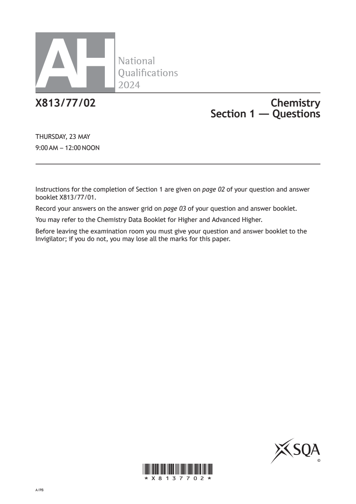
Selectable page text
AH
National
Qualications
2024
X813/77/02 Chemistry
Section 1 — Questions
THURSDAY, 23 MAY
9:00 AM – 12:00 NOON
Instructions for the completion of Section 1 are given on page 02 of your question and answer
booklet X813/77/01.
Record your answers on the answer grid on page 03 of your question and answer booklet.
You may refer to the Chemistry Data Booklet for Higher and Advanced Higher.
Before leaving the examination room you must give your question and answer booklet to the
Invigilator; if you do not, you may lose all the marks for this paper.
©
*X8137702*
A/PBPDF page 2
Paper 1, Question 1Paper 1, Question 2Paper 1, Question 3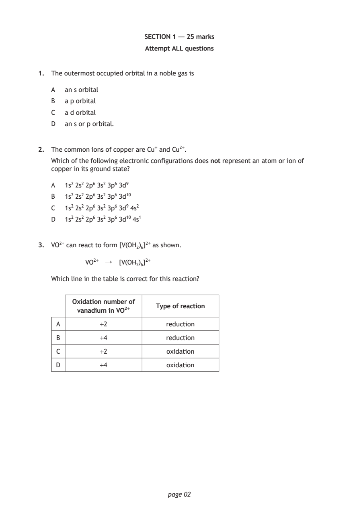
Selectable page text
SECTION 1 — 25 marks
Attempt ALL questions
1. The outermost occupied orbital in a noble gas is
A an s orbital
B a p orbital
C a d orbital
D an s or p orbital.
2. The common ions of copper are Cu⁺ and Cu²⁺.
Which of the following electronic configurations does not represent an atom or ion of
copper in its ground state?
A 1s² 2s² 2p⁶ 3s² 3p⁶ 3d⁹
B 1s² 2s² 2p⁶ 3s² 3p⁶ 3d¹⁰
C 1s² 2s² 2p⁶ 3s² 3p⁶ 3d⁹ 4s²
D 1s² 2s² 2p⁶ 3s² 3p⁶ 3d¹⁰ 4s¹
3. VO²⁺ can react to form [V(OH₂)₆]²+ as shown.
VO²⁺ ↓ [V(OH₂)₆]²+
Which line in the table is correct for this reaction?
Oxidation number of
Type of reaction
vanadium in VO²⁺
A +2 reduction
B +4 reduction
C +2 oxidation
D +4 oxidation
page 02PDF page 3
Paper 1, Question 4Paper 1, Question 5Paper 1, Question 6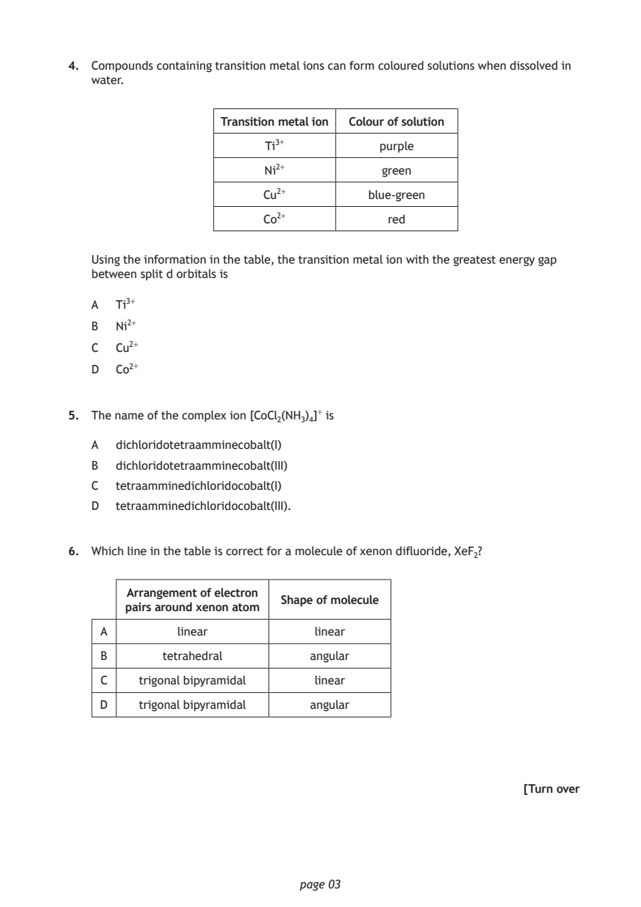
Selectable page text
4. Compounds containing transition metal ions can form coloured solutions when dissolved in
water.
Transition metal ion Colour of solution
Ti³⁺ purple
Ni²⁺ green
Cu²⁺ blue-green
Co²⁺ red
Using the information in the table, the transition metal ion with the greatest energy gap
between split d orbitals is
A Ti³⁺
B Ni²⁺
C Cu²⁺
D Co²⁺
5. The name of the complex ion [CoCl₂(NH₃)₄]⁺ is
A dichloridotetraamminecobalt(I)
B dichloridotetraamminecobalt(III)
C tetraamminedichloridocobalt(I)
D tetraamminedichloridocobalt(III).
6. Which line in the table is correct for a molecule of xenon difluoride, XeF₂?
Arrangement of electron
Shape of molecule
pairs around xenon atom
A linear linear
B tetrahedral angular
C trigonal bipyramidal linear
D trigonal bipyramidal angular
[Turn over
page 03PDF page 4
Paper 1, Question 7Paper 1, Question 8Paper 1, Question 9Paper 1, Question 10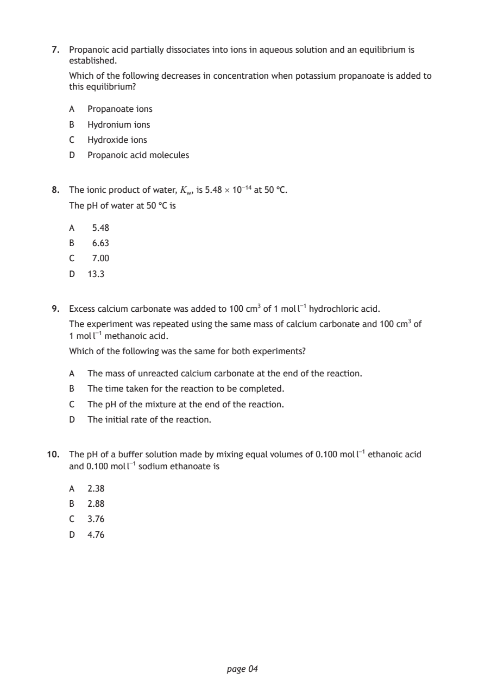
Selectable page text
7. Propanoic acid partially dissociates into ions in aqueous solution and an equilibrium is
established.
Which of the following decreases in concentration when potassium propanoate is added to
this equilibrium?
A Propanoate ions
B Hydronium ions
C Hydroxide ions
D Propanoic acid molecules
8. The ionic product of water, K_{w}, is 5.48 × 10⁻¹⁴ at 50 °C.
The pH of water at 50 °C is
A 5.48
B 6.63
C 7.00
D 13.3
9. Excess calcium carbonate was added to 100 cm³ of 1 mol l⁻¹ hydrochloric acid.
The experiment was repeated using the same mass of calcium carbonate and 100 cm³ of
1 mol l⁻¹ methanoic acid.
Which of the following was the same for both experiments?
A The mass of unreacted calcium carbonate at the end of the reaction.
B The time taken for the reaction to be completed.
C The pH of the mixture at the end of the reaction.
D The initial rate of the reaction.
10. The pH of a buffer solution made by mixing equal volumes of 0.100 mol l⁻¹ ethanoic acid
and 0.100 mol l⁻¹ sodium ethanoate is
A 2.38
B 2.88
C 3.76
D 4.76
page 04PDF page 5
Paper 1, Question 11Paper 1, Question 12Paper 1, Question 13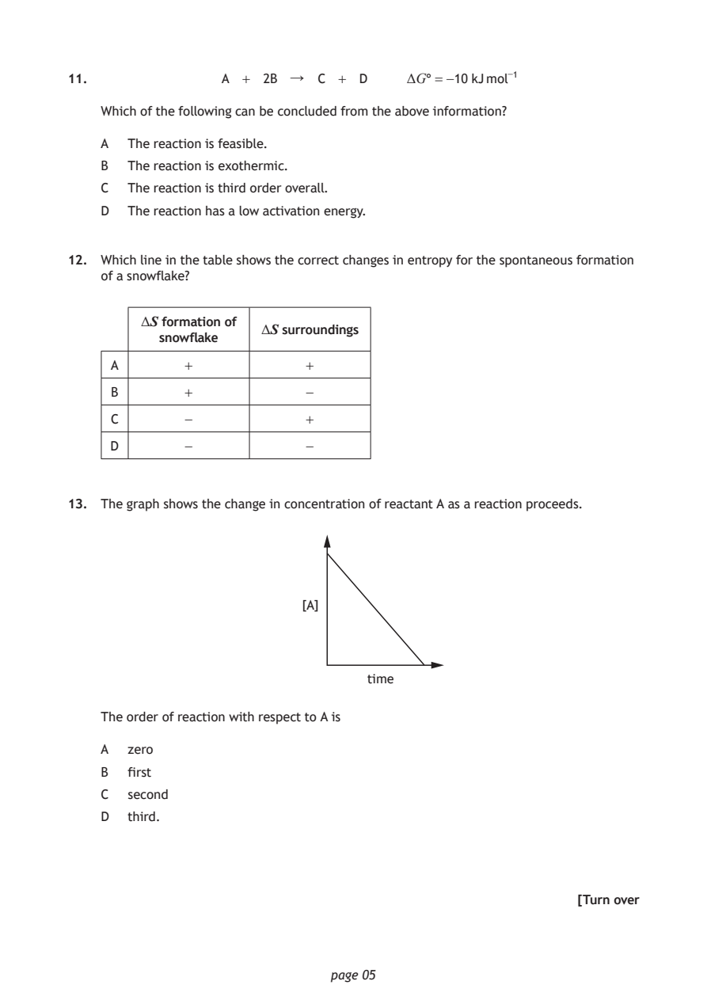
Selectable page text
11. A + 2B ↓ C + D ΔG° = -10 kJ mol⁻¹
Which of the following can be concluded from the above information?
A The reaction is feasible.
B The reaction is exothermic.
C The reaction is third order overall.
D The reaction has a low activation energy.
12. Which line in the table shows the correct changes in entropy for the spontaneous formation
of a snowflake?
ΔS formation of
ΔS surroundings
snowflake
A + +
B + -
C - +
D - -
13. The graph shows the change in concentration of reactant A as a reaction proceeds.
[A]
time
The order of reaction with respect to A is
A zero
B first
C second
D third.
[Turn over
page 05PDF page 6
Paper 1, Question 14Paper 1, Question 15Paper 1, Question 16Paper 1, Question 17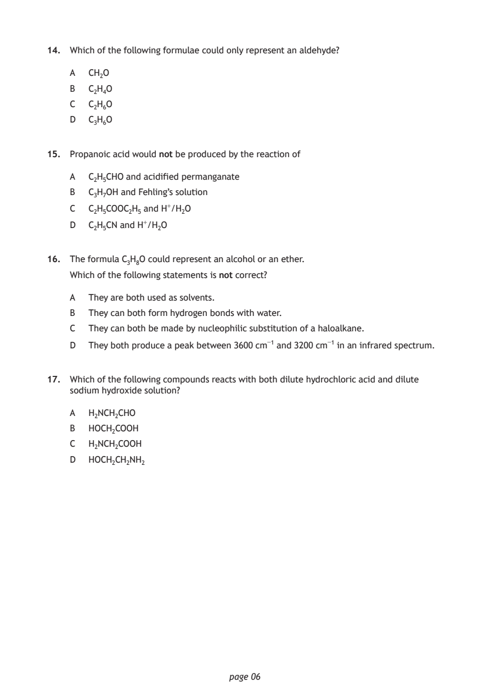
Selectable page text
14. Which of the following formulae could only represent an aldehyde?
A CH₂O
B C₂H₄O
C C₂H₆O
D C₃H₆O
15. Propanoic acid would not be produced by the reaction of
A C₂H₅CHO and acidified permanganate
B C₃H₇OH and Fehling’s solution
C C₂H₅COOC₂H₅ and H⁺/H₂O
D C₂H₅CN and H⁺/H₂O
16. The formula C₃H₈O could represent an alcohol or an ether.
Which of the following statements is not correct?
A They are both used as solvents.
B They can both form hydrogen bonds with water.
C They can both be made by nucleophilic substitution of a haloalkane.
D They both produce a peak between 3600 cm⁻¹ and 3200 cm⁻¹ in an infrared spectrum.
17. Which of the following compounds reacts with both dilute hydrochloric acid and dilute
sodium hydroxide solution?
A H₂NCH₂CHO
B HOCH₂COOH
C H₂NCH₂COOH
D HOCH₂CH₂NH₂
page 06PDF page 7
Paper 1, Question 18Paper 1, Question 19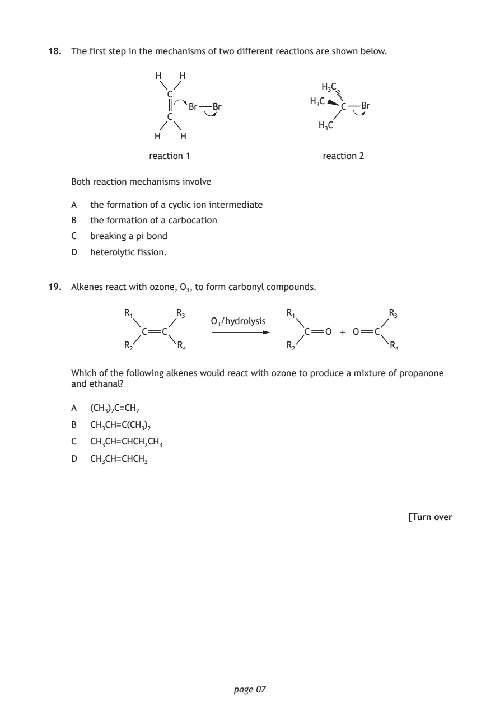
Selectable page text
18. The first step in the mechanisms of two different reactions are shown below.
H H
H₃C
C
H₃C
Br BBrr C Br
C
H₃C
H H
reaction 1 reaction 2
Both reaction mechanisms involve
A the formation of a cyclic ion intermediate
B the formation of a carbocation
C breaking a pi bond
D heterolytic fission.
19. Alkenes react with ozone, O₃, to form carbonyl compounds.
R₁ R₃ R₁ R₃
O₃/hydrolysis
C C C O + O C
R₂ R₄ R₂ R₄
Which of the following alkenes would react with ozone to produce a mixture of propanone
and ethanal?
A (CH₃)₂C=CH₂
B CH₃CH=C(CH₃)₂
C CH₃CH=CHCH₂CH₃
D CH₃CH=CHCH₃
[Turn over
page 07PDF page 8
Paper 1, Question 20Paper 1, Question 21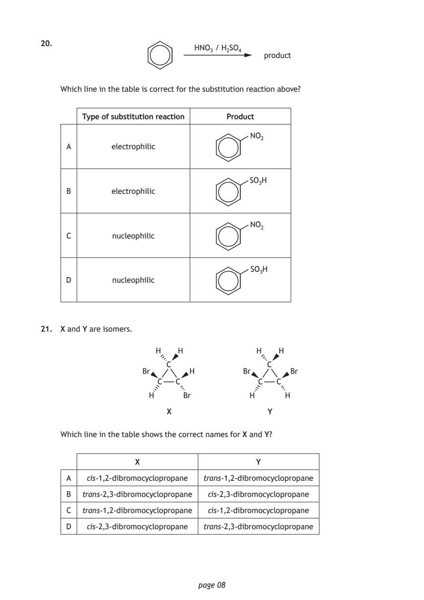
Selectable page text
20.
HNO₃ / H₂SO₄
product
Which line in the table is correct for the substitution reaction above?
Type of substitution reaction Product
NO₂
A electrophilic
SO₃H
B electrophilic
NO₂
C nucleophilic
SO₃H
D nucleophilic
21. X and Y are isomers.
H H H H
C C
Br H Br Br
C C C C
H Br H H
X Y
Which line in the table shows the correct names for X and Y?
X Y
A cis-1,2-dibromocyclopropane trans-1,2-dibromocyclopropane
B trans-2,3-dibromocyclopropane cis-2,3-dibromocyclopropane
C trans-1,2-dibromocyclopropane cis-1,2-dibromocyclopropane
D cis-2,3-dibromocyclopropane trans-2,3-dibromocyclopropane
page 08PDF page 9
Paper 1, Question 22Paper 1, Question 23Paper 1, Question 24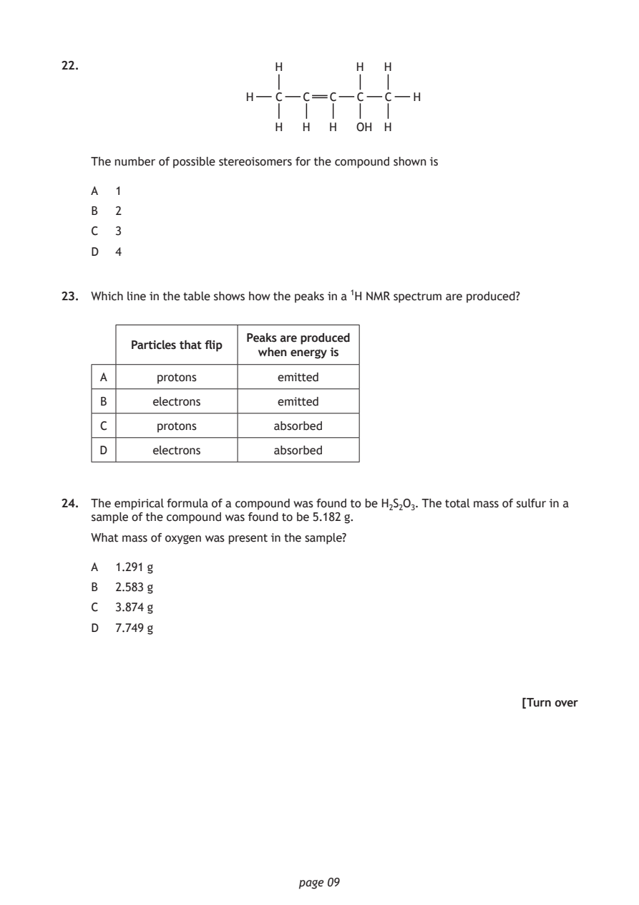
Selectable page text
22. H H H
H C C C C C H
H H H OH H
The number of possible stereoisomers for the compound shown is
A 1
B 2
C 3
D 4
23. Which line in the table shows how the peaks in a ¹H NMR spectrum are produced?
Peaks are produced
Particles that flip
when energy is
A protons emitted
B electrons emitted
C protons absorbed
D electrons absorbed
24. The empirical formula of a compound was found to be H₂S₂O₃. The total mass of sulfur in a
sample of the compound was found to be 5.182 g.
What mass of oxygen was present in the sample?
A 1.291 g
B 2.583 g
C 3.874 g
D 7.749 g
[Turn over
page 09PDF page 10
Paper 1, Question 25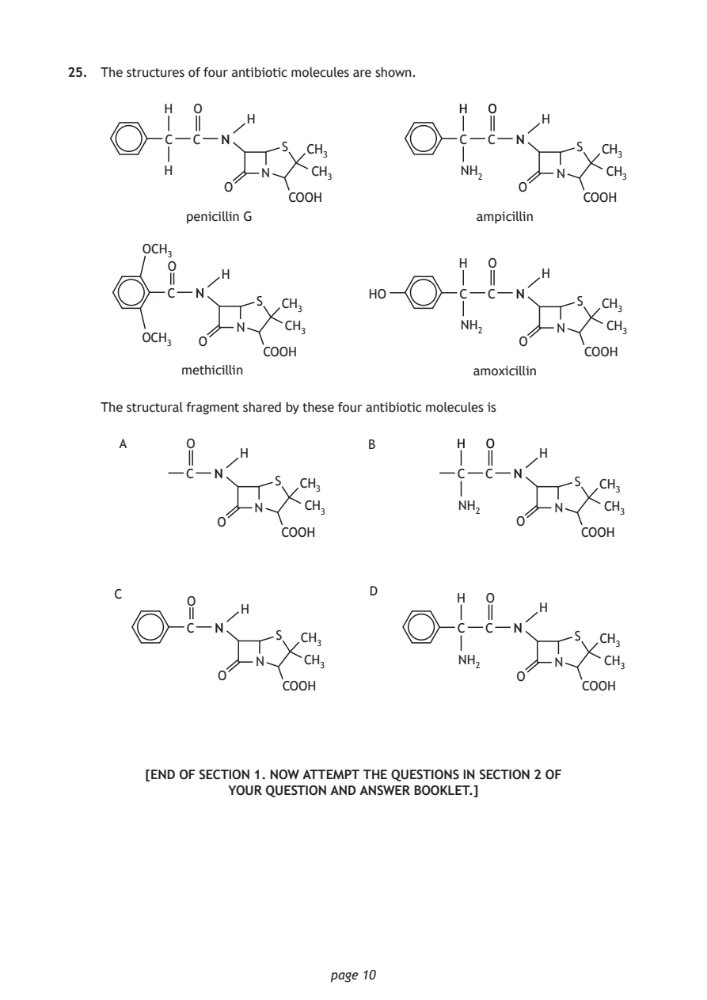
Selectable page text
25. The structures of four antibiotic molecules are shown.
H O H O
H H
C C NN C C NN
S CH₃ S CH₃
H N CH₃ NH₂ N CH₃
O O
COOH COOH
penicillin G ampicillin
OCH₃
O H O
H H
C NN HO C C NN
S CH₃ S CH₃
N CH₃ NH₂ N CH₃
OCH₃
O O
COOH COOH
methicillin amoxicillin
The structural fragment shared by these four antibiotic molecules is
A O B H O
H H
C NN C C NN
S CH₃ S CH₃
N CH₃ NH₂ N CH₃
O O
COOH COOH
C O D H O
H H
C NN C C NN
S CH₃ S CH₃
N CH₃ NH₂ N CH₃
O O
COOH COOH
[END OF SECTION 1. NOW ATTEMPT THE QUESTIONS IN SECTION 2 OF
YOUR QUESTION AND ANSWER BOOKLET.]
page 10PDF page 11
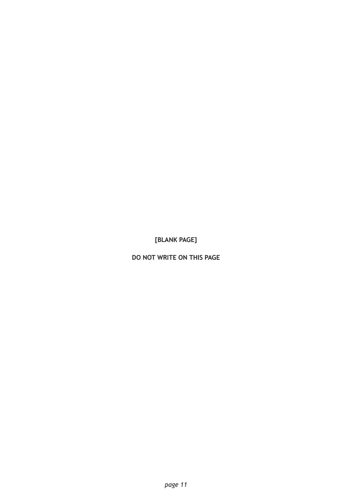
Selectable page text
[BLANK PAGE]
DO NOT WRITE ON THIS PAGE
page 11PDF page 12

Selectable page text
[BLANK PAGE]
DO NOT WRITE ON THIS PAGE
page 12